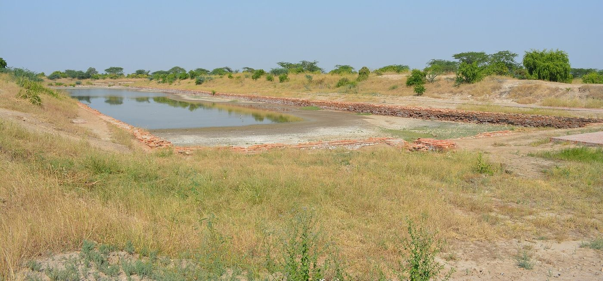
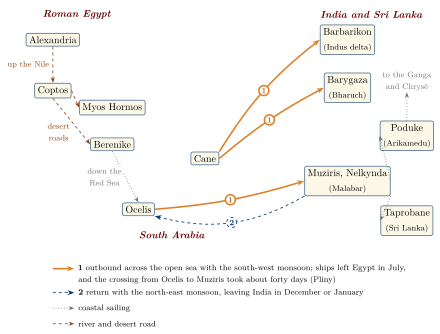
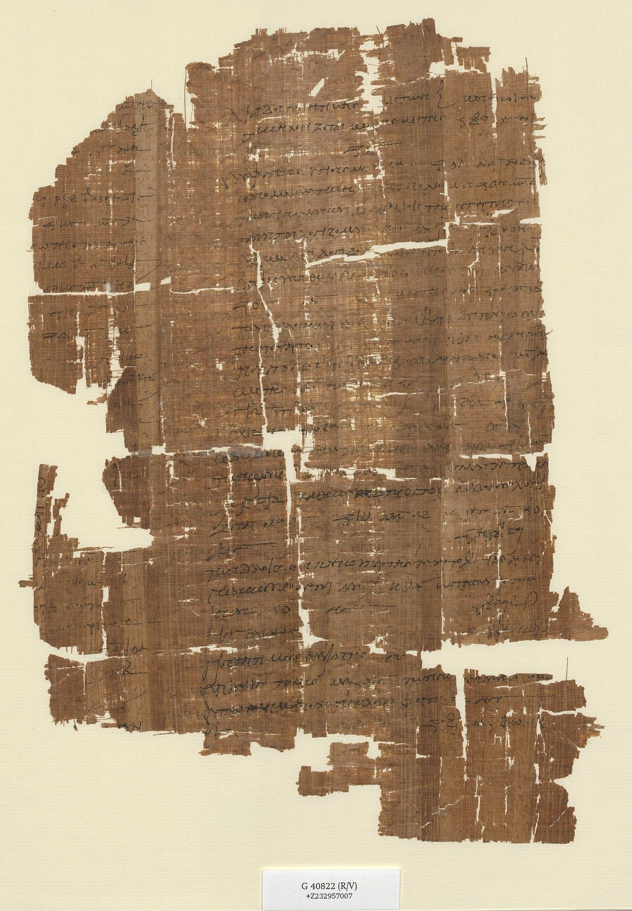

Chapter 11: Seaborne Trade from the Harappans to the Indo-Roman Trade¶
Chapter Overview
This chapter follows seaborne trade along the coasts of South Asia from the Harappan cities to about 600 CE. It begins with the Bronze Age exchange between the Indus region, the Gulf and Mesopotamia, and sets out the debate over the brick basin at Lothal. It then turns to the thin evidence of the following millennium, to the Vedic, Buddhist and Jain texts that speak of the sea, and to contacts with the Achaemenid and Hellenistic worlds. The centre of the chapter is the trade between India and Roman Egypt in the first centuries CE, known from the Periplus Maris Erythraei, from Pliny and Strabo, from the Muziris papyrus and from excavations on both sides of the Arabian Sea. The last sections look at Sri Lanka, Arabia and East Africa, the Bay of Bengal and early Southeast Asia, and the place of Buddhism in maritime exchange.
11.1 Sources and Their Limits¶
The evidence for early seaborne trade is uneven in time and in kind. For the third millennium BCE there are objects found far from where they were made (beads, seals, weights, pottery) and a small number of Mesopotamian texts. For most of the second and first millennia BCE the evidence is very thin. From about the third century BCE the sources multiply: Buddhist and Jain narrative literature, the Arthaśāstra and the dharma texts, Tamil poetry of the Caṅkam anthologies, Greek and Latin authors, and inscriptions. Excavations at ports on both sides of the Arabian Sea and the Bay of Bengal, many of them carried out since the 1980s, have transformed the picture for the centuries around the beginning of the Common Era (Ray 2003; Tomber 2008).
Each kind of source has its bias (Table 11.1). Archaeology, in particular, preserves pottery, beads and coins far better than pepper, textiles and timber, which made up much of what was shipped. Modern writing has its own distortions: Mookerji (1912) assembled every textual reference to ships into a picture of an ancient Indian maritime empire, while older European scholarship treated the Indo-Roman trade as a Roman enterprise with Indians as passive suppliers (Warmington 1928; Wheeler 1954). Recent work stresses that the ocean was shared by many groups of sailors and merchants (Ray 2003; Tomber 2008; Pearson 2003).
| Kind of evidence | Examples | Main limits |
|---|---|---|
| Bronze Age artefacts | Indus seals, carnelian beads and weights in Mesopotamia and the Gulf; Gulf seals at Lothal | Few objects; route and agents usually invisible |
| Mesopotamian texts | References to Meluhha, Dilmun and Magan | Identification of Meluhha is inferred; texts mention only what reached Mesopotamia |
| Indian religious texts | Ṛgveda, Jātakas, avadānas, Jain canonical narratives | Hard to date; literary and didactic aims |
| Normative texts | Arthaśāstra, Dharmasūtras, Manusmṛti | Prescriptions, not descriptions of practice |
| Tamil poetry | Caṅkam anthologies, Paṭṭiṉappālai | Dating debated; poetic conventions |
| Greek and Latin texts | Periplus, Strabo, Pliny, Ptolemy | Western viewpoint; some figures rhetorical |
| Documents | Muziris papyrus; Tamil-Brāhmī graffiti in Egypt | Rare and fragmentary |
| Port archaeology | Arikamedu, Pattanam, Berenike, Myos Hormos | Perishable goods seldom survive |
| Coins | Roman coin hoards in peninsular India | Hoards record deposition, not the route or the volume of trade |
11.2 The Harappans, the Gulf and Mesopotamia¶
11.2.1 Meluhha, Dilmun and Magan¶
Cuneiform texts of the later third millennium BCE name three lands beyond the head of the Gulf with which Mesopotamia traded by sea: Dilmun, generally identified with Bahrain and the neighbouring coast of eastern Arabia; Magan, identified with the Oman peninsula; and Meluhha, which most scholars identify with the Indus civilisation or its coastal regions (Possehl 2002; Ratnagar 2004). Sargon of Akkad (c. 2334–2279 BCE in the conventional chronology) claimed in an inscription that ships from Meluhha, Magan and Dilmun were moored at the quay of his capital, Akkad. Texts of the Akkadian and Ur III periods mention goods from Meluhha, among them carnelian, fine woods, ivory, gold and exotic animals; a cylinder seal of the Akkadian period belonged to a man described as an interpreter of the Meluhhan language; and administrative texts of the Ur III period refer to a settlement of Meluhhans in the territory of Lagash (Possehl 2002; Ratnagar 2004). These hints suggest that people from Meluhha travelled to Mesopotamia and that some stayed there.
The identification of Meluhha with the Indus region rests on the fit between the goods named and Harappan products, on the order in which the three lands are listed, and on Indus objects found in Mesopotamia and the Gulf; it is a strong inference rather than a proof. After about 1900 BCE references to Meluhha become rare. In the Old Babylonian period merchants of Ur went to Dilmun to buy copper and other goods there, and Dilmun, not Meluhha, appears as the main partner (Ratnagar 2004).
11.2.2 The Material Evidence¶
Objects of Indus manufacture or style found in Mesopotamia include long carnelian beads and etched carnelian beads, several of them from the royal cemetery at Ur, and a small number of square Indus seals and Indus-style seals from sites such as Ur and Kish (Kenoyer 1998; Possehl 2002). In the Gulf, a distinctive class of round stamp seals (“Gulf” or Dilmun seals) sometimes carries signs of the Indus script, and one such Gulf-type seal was found at Lothal (Rao 1979). Weights of the Indus standard have been found in Bahrain, and Dilmun appears to have adopted that standard for some purposes. Indus-type pottery and other objects have been reported from coastal sites in Oman, including Ras al-Jinz, which suggests that Harappan seafarers or goods reached Magan directly as well as through Dilmun (Possehl 2002; Ratnagar 2004).
Boats appear on a few Indus seals and tablets, and a terracotta boat model was found at Lothal, but these are too schematic to reconstruct a sea-going hull (McGrail et al. 2003); see Chapter 13.
11.2.3 Coastal Settlements¶
The Harappan coast ran from the Makran in the west, where Sutkagen-dor and Balakot stand near the sea, through Sindh to Kachchh and Saurashtra. In Gujarat, sites such as Lothal, Kuntasi, Nageshwar and Bagasra (Gola Dhoro) worked marine shell, especially the conch Turbinella pyrum for bangles, and semi-precious stones such as carnelian and agate from local sources (Kenoyer 1998). Dholavira, on Khadir island in the Great Rann of Kachchh, excavated by R. S. Bisht from 1989, is one of the largest Harappan cities and is known for its reservoirs and water channels, its fortified citadel and its large inscription of Indus signs. It is often called a port, on the assumption that the Rann was then navigable; that is plausible but debated, (Possehl 2002).
11.2.4 What Kind of Trade?¶
Shereen Ratnagar has argued that the Indus–Gulf–Mesopotamia exchange was a trade in a limited range of raw materials and luxury goods, conducted partly through intermediaries, and that it mattered more to Mesopotamian palaces and temples, which had no stone, metal or hard timber of their own, than to the Indus cities (Ratnagar 2004). Possehl similarly treats the “Middle Asian Interaction Sphere” as a network of many regional partners rather than a two-way trade between great civilisations (Possehl 2002). There is no evidence for regular open-sea crossings of the Arabian Sea in this period; the route probably followed the Makran and Arabian coasts.
11.3 Lothal: Port Town and the Dock Debate¶
Lothal, near the head of the Gulf of Khambhat in Gujarat, was excavated by S. R. Rao of the Archaeological Survey of India between 1955 and 1962 (Rao 1979). Its mature Harappan occupation is dated c. 2400–1900 BCE. The settlement was small but busy: it had a bead-making workshop that worked carnelian and other stones, copper-working areas, a raised platform with a building that Rao interpreted as a warehouse (in which clay sealings with the impressions of packing materials were found), and the Gulf-type seal mentioned above. Lothal was clearly a centre of craft production and exchange with links to the Gulf.
The most famous feature of the site is a large, rectangular, brick-lined basin on its eastern side (Figure 11.1), about 214–219 metres long and 35–37 metres wide (published figures vary), with openings in its walls that Rao identified as an inlet and a spillway. Rao interpreted the basin as a tidal dock into which ships could sail from an old course of the Sabarmati or Bhogavo river at high tide (Rao 1979).


Debate: Was the Lothal Basin a Dock?
The dock interpretation. S. R. Rao argued that the basin’s size, its baked-brick walls, the inlet and spillway channels, its position next to the platform and warehouse, and the evidence of foreign contacts at the site all indicate a basin for berthing ships at high tide (Rao 1979).
The reservoir interpretation. Lawrence Leshnik argued in 1968 that the basin is better explained as a tank or reservoir for fresh water, perhaps for irrigation or drinking, and that the case for a dock had not been made (Leshnik 1968). Later scholars have been divided: some accept a dock, some prefer a tank, and others note that boats could simply have been beached or moored in the river channel, so that a dock was not necessary for Lothal to function as a port (Possehl 2002; Ray 2003).
Present position. The function of the basin is debated and cannot be settled from the published evidence. What is not in doubt is that Lothal was a craft and trading settlement with contacts that reached the Gulf. Its description as the “world’s first dockyard”, often heard in public discussion, therefore states as fact what is a debated interpretation, and the mature phase at the site dates to c. 2400–1900 BCE.
11.4 After the Harappans: Vedic and Early Textual Evidence¶
Between the end of the Harappan cities and the early historic period (roughly 1900–500 BCE) the evidence for long-distance seaborne trade is slight. Coastal settlements in Gujarat and elsewhere continued, and fishing and short coastal voyages must have gone on, but there is no body of finds comparable to that of the third millennium BCE or the early centuries CE (Ray 2003). Local seafaring surely continued, but a continuous long-distance trade cannot be inferred from silence.
The Ṛgveda (c. 1500–1200 BCE) is the earliest Indian text to speak of ships (nau) and of samudra. The meaning of samudra in the oldest hymns is debated: it may denote the sea, but it may also mean any large gathering of waters, such as the lower Indus with its tributaries, or the heavenly waters. The best-known passage is the story of Bhujyu, son of Tugra, told in several hymns to the Aśvins (for example RV 1.116.3–5): Bhujyu is left in the waters of the samudra and the Aśvins rescue him with ships, including a ship “of a hundred oars”. Elsewhere Varuṇa is said to know the track of the birds in the air and the ships of the samudra (RV 1.25.7), and the poet Vasiṣṭha imagines himself sailing with Varuṇa (RV 7.88.3–4). These passages show that the poets knew boats and imagined voyages over large waters. They do not describe trade, and Bhujyu is not presented as a merchant; the hundred-oared ship belongs to a story of divine rescue and is not evidence for real ship sizes.
By the time of the Dharmasūtras the sea voyage had become a topic of law. The Baudhāyana Dharmasūtra lists going to sea among the customs peculiar to the north, which it does not recommend to others, and later lists it among the acts that cause loss of caste (BDhS 1.2.4; 2.2.2) (Olivelle 1999). The Manusmṛti (c. 2nd century CE) excludes a man who goes to sea from the guests at an ancestral offering (MDh 3.158), yet also says that rates of interest on sea voyages are to be fixed by people expert in such voyages (MDh 8.157) (Olivelle 2004). Brahmanical texts thus regarded the sea voyage as polluting for Brahmins while taking for granted that others undertook it. Such restrictions were real, but they were variably observed, and they did not apply to the Buddhist and Jain merchants, Tamil traders and coastal communities who carried much of the trade discussed below.
11.5 Merchants at Sea in Buddhist and Jain Narrative¶
The Pali Jātaka collection is the richest Indian source of stories about sea voyages. It is a layered text: the verses are older than the prose stories that frame them, which were fixed in the commentary of about the fifth century CE, though many of the tales were known much earlier, as scenes carved at Bharhut in the second or first century BCE show. The stories therefore reflect conditions over several centuries and cannot be dated precisely (Chakravarti 2002).
Several Jātakas place merchants on the open sea. In the Bāveru Jātaka merchants sail to Bāveru, generally identified with Babylon, where there are no birds; they sell a crow for a high price, and on a later voyage a trained peacock for much more. The story is a satire on credulity, but it also preserves the memory of voyages from India to Mesopotamia. In the Suppāraka Jātaka (no. 463) the Bodhisatta is a blind but skilled pilot of Bharukaccha who guides a ship of merchants through a series of strange seas and brings them home with a cargo of treasure; the story was retold in Sanskrit in Āryaśūra’s Jātakamālā. In the Saṅkha and Mahājanaka Jātakas, heroes sail for Suvaṇṇabhūmi, the “land of gold” in Southeast Asia, are shipwrecked, and are rescued by the sea goddess Maṇimekhalā; in the Valāhassa Jātaka shipwrecked merchants are trapped on an island of ogresses in Tambapaṇṇi (Sri Lanka) (Chakravarti 2002; Ray 1994).
Other Buddhist texts add to the picture. The story of Pūrṇa in the Sanskrit Divyāvadāna tells of the son of a merchant of Sūrpāraka (Sopara) by a slave woman, who leads trading voyages, meets Buddhist merchants from Śrāvastī on one of them and becomes a monk. The Milindapañha, compiled in the early centuries CE, compares a skilled monk to a ship-owner grown rich who can sail to Vaṅga, Takkola, China, Sovīra, Suraṭṭha, Alasanda, the Coromandel coast and Suvaṇṇabhūmi, a list that sketches the maritime horizon of its time. Jain canonical narrative, notably the Jñātādharmakathā (Prakrit Nāyādhammakahāo), likewise tells of merchants of Campā who sail out in search of profit and are tested by storms and sea deities.
The Arthaśāstra (Chapter 2) approaches the sea from the side of the state. It provides for a Superintendent of Shipping (nāvadhyakṣa) who collects port dues and fees from boats, enforces regulations in port towns, and is to destroy pirate vessels (AŚ 2.28); and in comparing trade routes it prefers, among water routes, the coastal route with its many ports to the route across the open sea (AŚ 7.12) (Olivelle 2013; Kangle 1960). These are prescriptions for an idealised kingdom, not descriptions of actual ports; the law of ports and shipping is treated in Chapter 15.
11.6 Achaemenid and Hellenistic Contacts¶
In the late sixth century BCE the Achaemenid king Darius I brought the lower Indus region (Old Persian Hindush) into his empire. Herodotus (4.44) reports that Darius sent Scylax of Caryanda to sail down the Indus to the sea and then westward, arriving after thirty months in the Red Sea. The details are uncertain. In 325–324 BCE Alexander’s admiral Nearchus took a fleet from the mouth of the Indus along the Makran coast to the head of the Gulf, a voyage known from the account preserved in Arrian’s Indica; the fleet relied on local knowledge of the coast.
The Ptolemaic kings of Egypt developed the Red Sea harbours of Berenike and Myos Hormos in the third century BCE, at first chiefly to bring African elephants for their armies. Strabo (2.3.4), drawing on Posidonius, tells how an Indian sailor, found half-dead in a ship stranded in the Red Sea and brought to the court of Ptolemy VIII, offered to guide a voyage to India; Eudoxus of Cyzicus then made two voyages, in the late second century BCE, returning with aromatics and precious stones. Indian goods had long reached the Mediterranean through Arabian and other intermediaries, but direct voyages between Egypt and India became common only after Rome annexed Egypt in 30 BCE. Strabo (2.5.12), who travelled up the Nile with the prefect Aelius Gallus in the 20s BCE, says he learned that as many as 120 ships were then sailing from Myos Hormos to India, whereas under the Ptolemies only a few had dared to make the voyage (Casson 1989; Cobb 2018).
Cross-Reference: The Monsoon and “Hippalus”
The long voyages between the Red Sea and India depended on the reversing monsoon winds. The Periplus (§57) credits a ship’s captain named Hippalus with first working out the open-sea route; sailors of the Indian Ocean coasts knew the monsoon long before, and what the Greek sources credit to him is the use of the wind for direct crossings away from the coast. The question, and the sailing calendar, are discussed in Chapter 14 (Section 14.3).
11.7 The Indo-Roman Trade¶
From the late first century BCE to the third century CE, trade between Roman Egypt and India reached a scale, and left a body of evidence, not matched in any earlier period. Excavations in India and Egypt now allow it to be seen from both ends (Tomber 2008; Cobb 2018), and Grant Parker has examined how Roman writers built an image of India out of this contact (Parker 2008). Figure 11.2 shows the routes in outline.

11.7.1 The Periplus Maris Erythraei¶
The Periplus Maris Erythraei (“Circumnavigation of the Erythraean Sea”) is a Greek handbook written by an anonymous merchant based in Roman Egypt, most probably in the middle of the first century CE (Casson 1989). Its author describes, port by port, the coasts of the Red Sea, the Horn of Africa and the East African coast as far as Rhapta, southern Arabia, the mouth of the Gulf, and India from the Indus delta down the west coast and up the east coast towards the Ganga. For each place he records goods sold and bought, anchorages and local rulers. The standard edition with commentary is Casson (1989); Schoff (1912) is an older translation.
The Periplus names many Indian ports (Table 11.2). Barygaza (Bharukaccha, modern Bharuch) receives the fullest description. Its approach was dangerous because of tides and shoals, and pilot boats in the king’s service met incoming ships and guided them up the river (§44; Section 14.6). Old silver drachmas of the Indo-Greek kings Apollodotus and Menander were still in use there (§47). Goods came to Barygaza from the Deccan towns of Paithana (Paiṭhan) and Tagara (Ter) by wagon (§51). Further south, Muziris and Nelkynda in Limyrikē (the Malabar coast) were the great pepper ports; the author says that large ships went there because of the bulk of the pepper and malabathrum, and that a great quantity of coin was taken there (§56). On the east coast he mentions local coasting craft, large boats called sangara made of logs lashed together, and very large ships called kolandiophōnta that sailed to Chrysē (Southeast Asia) and the Ganga (§60) (Casson 1989). Indian ships and boats are discussed further in Chapter 13.
The text also shows that rulers could open or close ports: at Kalliena (Kalyan) Greek ships were no longer allowed to trade and were sent under guard to Barygaza (§52). The southern pepper ports lay in the territories of the Cēra and Pāṇḍya kings (Casson 1989; Champakalakshmi 1996).
| Periplus name | Identification | Status of identification |
|---|---|---|
| Barbarikon | Indus delta | Exact site unknown |
| Barygaza | Bharuch (Bharukaccha) on the Narmada | Secure |
| Souppara | Sopara (Śūrpāraka) near Mumbai | Secure |
| Kalliena | Kalyan near Mumbai | Secure |
| Muziris | Tamil Muciṟi, near the mouth of the Periyar, Kerala | General area secure; Pattanam proposed as the site |
| Nelkynda | Inland port in southern Kerala | Exact site uncertain |
| Kolchoi | Korkai, Tamil Nadu (pearl fishery) | Generally accepted |
| Poduke | Arikamedu near Puducherry | Probable, widely accepted |
| Kamara, Sopatma | Coromandel coast | Proposed identifications vary |
| Gange | A port near the mouth of the Ganga | Uncertain |
11.7.2 What Was Traded¶
The Periplus lists the goods exchanged at each port, and these lists can be checked against Pliny and against archaeology. Pepper from the Malabar coast was the largest single export to Egypt by bulk and value, but the trade was diverse (Table 11.3). The English word “pepper” comes through Latin piper and Greek peperi from an Indian word related to Sanskrit pippalī, which properly means long pepper; black pepper is marica in Sanskrit and miḷaku in Tamil.
| Category | From India to Egypt | From Egypt to India |
|---|---|---|
| Spices and aromatics | Black and long pepper, malabathrum (leaf of a cinnamon-related tree), Gangetic nard, costus, bdellium | Storax, some Arabian incense |
| Textiles | Cotton cloth of many grades, including fine muslins; Chinese silk and yarn re-exported | Clothing and multicoloured textiles |
| Precious goods | Pearls, diamonds, sapphires and other gems, agate and onyx, ivory, tortoise shell | Coral, peridot, glass |
| Metals and minerals | — | Gold and silver coin, copper, tin, lead, antimony, realgar and orpiment |
| Other | Indigo, lycium | Wine (Italian, Laodicean and Arabian); at Barygaza, for the king, silver vessels, slave musicians and girls for the royal household |
The list for Barygaza (§49) is a reminder that the trade included people: slave musicians and young women are among the gifts brought for the king. The Periplus also notes that the pearl fishery at Kolchoi was worked by condemned criminals (§59). Both details are reminders that this was not simply a trade in luxuries between equals (Casson 1989).
11.7.3 Pliny’s Figures and the Question of a “Drain”¶
Pliny the Elder, writing his Natural History in the 70s CE, gives the most quoted figures for the trade. In describing the voyage to India he says that in no year did India take less than fifty million sesterces from the Roman empire, sending in return goods that sold at a hundred times their cost (NH 6.101). Elsewhere, complaining about luxury, he says that at the lowest reckoning India, the Seres (the Chinese) and the Arabian peninsula together took one hundred million sesterces a year from the empire (NH 12.84). He also describes the route: from Alexandria up the Nile to Coptos, across the desert to Berenike, by sea to Ocelis or Cane in southern Arabia, and from there with the wind he calls “hippalus” to Muziris (NH 6.101–106); the timetable of the voyage is set out in Section 14.2.2 (De Romanis 2020; Cobb 2018).
Scholarly Note: How to Read Pliny
Pliny’s figures are rhetorical. They come from passages condemning Roman extravagance, and he does not say how they were reached. Fifty million sesterces was a large sum, but a small fraction of the revenues of the Roman state. The figures probably refer to the value of goods rather than a net outflow of coin, and much of the value was captured inside the empire: the Roman state levied a duty of one quarter on imports from India at the Red Sea frontier, and the mark-up between India and Rome went to merchants, shippers and financiers in Egypt and Italy (De Romanis 2020; Cobb 2018). Roman coins did flow to India, as the hoards show, but the trade cannot be described as a “drain” in the modern sense, and Pliny’s lament is a moral complaint, not a statistic of the balance of trade.
11.7.4 Finance and Tax: The Muziris Papyrus¶
A Greek papyrus in Vienna (P. Vindob. G 40822), of the mid-second century CE, gives a rare glimpse of how the trade was financed. One side preserves part of a loan contract that refers to loan agreements made at Muziris and sets out how goods brought back from India were to be carried, under the lender’s control, from the Red Sea through the desert to Coptos and down the Nile to Alexandria. The other side (Figure 11.3) values part of the cargo of a ship named Hermapollon returning from Muziris, including Gangetic nard and ivory, and calculates the one-quarter duty owed to the state. The total value of the cargo ran to millions of drachmas, a scale that required large loans and that made the import duty a significant revenue for Rome. De Romanis (2020) has used the papyrus to reconstruct the organisation of the pepper trade in detail. The document shows that the voyages were financed by credit secured on the cargo, a practice comparable in function to the sea loans with high interest mentioned in Indian law books (see Chapter 6).


11.7.5 The Evidence in India¶
Arikamedu. The site of Arikamedu, on a lagoon south of Puducherry, was excavated by Mortimer Wheeler in 1945, by J.-M. Casal in the late 1940s, and by Vimala Begley and colleagues in 1989–1992 (Wheeler 1954; Begley and De Puma 1991). Wheeler found Italian terra sigillata (Arretine ware), wine amphorae and other Mediterranean material and interpreted the site as a Roman trading station of the first century CE. Begley’s work showed that the settlement was older, beginning by about the second century BCE; that it was an Indian town with its own craft industries, including the large-scale making of glass and stone beads; and that Mediterranean imports were one element among many (Begley and De Puma 1991). Arikamedu also yielded Indian rouletted ware, a fine grey pottery once thought to be a Mediterranean import and now regarded as Indian, which is found at sites around the Bay of Bengal. Arikamedu is generally identified with the Periplus’s Poduke.
Pattanam. Excavations since 2007 at Pattanam, near Kodungallur in Kerala, led by the Kerala Council for Historical Research, have produced Mediterranean amphora sherds, fine wares and glass, together with West Asian pottery, beads and a large body of local material spanning several centuries. The excavators have proposed that Pattanam is part of ancient Muziris. The proposal is attractive, since Muziris lay in this area, but it is not yet settled, and full publication of the excavations is awaited (Tomber 2008). Tamil poetry confirms the importance of Muciṟi: a poem in the Akanāṉūṟu (149) describes the ships of the Yavanas arriving there with gold and departing with pepper (Champakalakshmi 1996).
Coins. Roman coins have been found in peninsular India in many hoards and single finds, concentrated in Tamil Nadu (especially the Coimbatore region and around Karur and Madurai), with others in Karnataka, Andhra and Kerala (Turner 1989; Tomber 2008). Their composition, the cut marks on many of them and the question whether they circulated as currency are discussed in Section 5.5.3.
Other sites and the hinterland. Roman finds also come from Alagankulam on the Tamil coast and from Deccan towns such as Ter and Kolhapur. In the western Deccan, rock-cut Buddhist monasteries on the routes from the ports, such as Karle and Junnar, record gifts by merchants and by donors called Yavanas, a term used in India for Greeks and, more loosely, for people from the west (Ray 1986). Lead coins of the Sātavāhana king Yajña Śrī Sātakarṇi (late second century CE) show a two-masted ship. Tamil-Brāhmī inscriptions on pottery and in caves, from about the second century BCE, record merchants (vaṇikaṉ) and their goods (Mahadevan 2003). The Tamil poem Paṭṭiṉappālai praises the Chola port of Pūmpuhār and the goods that reached it from as far as Sri Lanka and the Malay peninsula (Section 15.2.5).
11.7.6 The Evidence on the Red Sea¶
Excavations at Berenike, directed by Steven Sidebotham and Willeke Wendrich from 1994, and at Quseir al-Qadim, ancient Myos Hormos, excavated in the late 1970s and again from 1999 by David Peacock and Lucy Blue, have revealed the Egyptian end of the trade (Sidebotham 2011; Tomber 2008). Indian material at Berenike includes black peppercorns, among them a large quantity found in an Indian-made storage jar in the temple of Serapis; teak timber reused in buildings; Indian cooking pots and fine wares; cotton textiles; rice and other plant remains; and beads (Sidebotham 2011). At both Berenike and Myos Hormos short graffiti in Tamil-Brāhmī script, mostly personal names, were scratched on pots, and Prakrit inscriptions in Brāhmī have also been found in Egypt (Mahadevan 2003; Tomber 2008). Tamil and other Indian merchants or sailors were evidently present in the Egyptian ports.
Further evidence of Indian seafarers comes from the island of Socotra, where a cave at Hoq contains many inscriptions and drawings left by visitors in the early centuries CE. Most of the inscriptions are in Brāhmī script and Indian languages, and many of the names suggest sailors from western India (Strauch 2012). The Periplus (§30) already describes the island’s population as a mixture of Arabs, Indians and Greeks who had come there to trade.
11.7.7 Ptolemy’s Geography¶
Claudius Ptolemy, writing in Alexandria in the mid-second century CE, gave coordinates for hundreds of places in India in Book 7 of his Geography, drawing on Marinus of Tyre and on merchants’ reports. His list of ports and towns shows how much information reached Alexandria through trade, but his India is badly distorted: the peninsula hardly projects southward, and Taprobane (Sri Lanka) is enormously exaggerated. Ptolemy is a valuable list of names, not an accurate picture of the coast (see Volume 21, Bhūgola).
11.7.8 Who Carried the Trade?¶
The Indo-Roman trade was not a single enterprise. Greek-speaking merchants of Roman Egypt, with financiers in Alexandria, sent ships to India; Nabataean and South Arabian merchants handled much of the Arabian end; Indian merchants and shipowners from Gujarat, the Konkan and the Tamil country sailed to Arabia, Socotra and Egypt; and Tamil kings and Deccan rulers controlled access to their ports and drew revenue from them (Tomber 2008; Ray 2003). It was one part of a wider network that also joined India to the Gulf, Sri Lanka, East Africa and Southeast Asia; the overland routes through the Kuṣāṇa territories are discussed in Chapter 10.
11.8 Sri Lanka, Arabia and East Africa¶
Sri Lanka. Sri Lanka lay at the meeting point of the routes of the Arabian Sea and the Bay of Bengal. Its pearls, gems and later its cinnamon were sought by traders from both directions. The port of Mantai on the north-west coast and the town of Tissamaharama in the south have produced Indian, Mediterranean and West Asian imports (Ray 2003). Pliny (NH 6.84–91) tells how a freedman collecting customs in the Red Sea was carried by winds to Taprobane, and how its king then sent an embassy to the emperor Claudius. In the sixth century Cosmas Indicopleustes described it in his Christian Topography as a centre where ships from China met ships from Persia, Ethiopia and India.
Arabia and the Gulf. South Arabian ports such as Qana (Bir Ali) and Sumhuram (Khor Rori) in Dhofar, which handled frankincense, traded with western India, and Indian pottery has been found at both (Tomber 2008). Under the Parthians and then the Sasanians (from 224 CE) the Gulf route remained an alternative to the Red Sea.
East Africa. The Periplus describes the coast of “Azania” south of the Horn of Africa as far as Rhapta, the last market town it knew, which exported ivory, rhinoceros horn and tortoise shell and imported iron tools and weapons; Rhapta has not been located, though it probably lay on the coast of what is now Tanzania (§§15–16) (Casson 1989). The same text says that ships from western India brought grain, rice, ghee, sesame oil, cotton cloth and cane sugar to the ports of the Horn, and that Indian iron and steel and cotton cloth were imported at Adulis on the Red Sea coast of Africa. Archaeological evidence for direct Indian contact on the East African coast before about 600 CE is limited; the Swahili trading towns developed later, and their links with India belong mainly to the period covered in Chapter 12 (Horton and Middleton 2000).
11.9 The Bay of Bengal and Early Southeast Asia¶
Contacts across the Bay of Bengal are older than the Indo-Roman trade. At Ban Don Ta Phet in west-central Thailand, a cemetery of about the fourth to second centuries BCE contained beads of carnelian and agate, including a carnelian pendant in the form of a lion, and high-tin bronze bowls, objects that point to exchange with South Asia (Glover 1989). At Khao Sam Kaeo on the isthmus of the Malay peninsula, excavations have found workshops of the last centuries BCE making stone and glass beads with South Asian techniques, which suggests that Indian craftsmen worked there alongside local ones. Indian rouletted ware and related pottery have been found in Sri Lanka, Java and Bali (Ray 2003). At Oc Eo in the Mekong delta, the main port of the polity Chinese sources call Funan, excavations in 1944 found Indian-style seals with Brāhmī legends, beads, and Roman objects including a gold medallion of Antoninus Pius, evidence that goods from the Mediterranean reached mainland Southeast Asia through Indian Ocean exchange (Coedès 1968).
Inscriptions of the fifth century CE begin to name individual traders. A stone from Province Wellesley in the Malay peninsula records, in Sanskrit, the mahānāvika (“great sea captain”) Buddhagupta of Raktamṛttikā, a place probably in Bengal (Coedès 1968). The Chinese monk Faxian, returning from India in the early fifth century, sailed from Tāmralipti to Sri Lanka on a merchant ship, and from there on a large ship carrying more than two hundred people towards China. Storms drove it to Yavadvīpa (Java or Sumatra), where he waited five months before taking another large ship for Guangzhou; when that ship too met storms, Brahmin passengers blamed the misfortune on the Buddhist monk on board (Liu 1988). Chinese sources also record a sea route from southern China towards South Asia under the Han, and envoys and merchants between Funan, India and China in the third century CE (Liu 1988; Wolters 1967).
These contacts involved neither conquest nor colonisation, and Southeast Asian sailors and ships were themselves active in the Bay of Bengal (Manguin 1993). The adoption of Indian scripts, religions and political ideas in Southeast Asia, and the debate over the term “Indianisation”, are treated in Chapter 16.
11.10 Buddhism and Maritime Trade¶
Himanshu Prabha Ray has argued that the spread of Buddhism and the growth of maritime trade in early South Asia were closely linked (Ray 1994). Buddhist monasteries stood near ports and on the routes leading inland from them: Kanheri near Sopara and Kalyan, Karle and Junnar on the passes of the Western Ghats, and Amarāvatī, Nāgārjunakoṇḍa, Śālihuṇḍam and other sites near the river mouths and harbours of the Andhra coast. Their inscriptions record gifts by merchants, caravan leaders, guilds and seafarers, as well as by Yavanas (Ray 1986, 1994). Buddhism, which did not share Brahmanical scruples about the sea, gave merchants a religious community that valued their giving; its stories gave them a protecting sea goddess, Maṇimekhalā, who also appears in the Tamil epic Maṇimēkalai.
The relationship had limits: monasteries were not trading firms, and Jains, Brahmins and followers of many other cults also took part in commerce. But Buddhism did travel with merchants: monks went by sea to Sri Lanka, to Southeast Asia and, by the fifth century, to China, and maritime Buddhist networks shaped the routes by which texts, images and pilgrims moved (Ray 1994; Liu 1988). Guilds and merchant donors are discussed further in Chapter 4.
11.11 Late Antiquity and the Road to the Medieval Ocean¶
The evidence for the Indo-Roman trade thins after the early third century CE. Fewer Roman coins of the later third century reach India, and some Red Sea ports declined, though Berenike was active again in the fourth and fifth centuries (Sidebotham 2011). Trade did not stop; its pattern changed. The kingdom of Aksum, with its port of Adulis, became a major intermediary on the African side of the Red Sea; Sasanian Persia controlled the Gulf, and Persian merchants and Christian communities linked to Persia were present in Sri Lanka and on the Malabar coast; and late Roman copper coins of the fourth and fifth centuries found in Sri Lanka and south India attest to continuing links. In the sixth century Procopius (Wars 1.20) reports that the emperor Justinian asked the Aksumites to buy silk from India and resell it to the Romans so as to bypass Persia, but that Persian merchants occupied the harbours where Indian ships put in and bought up their cargoes.
In South Asia, historians disagree about the economy of the centuries after about 300 CE. R. S. Sharma argued that towns and long-distance trade declined, while others see a reorganisation of trade around new regional centres rather than a general decline (Sharma 1987; Chattopadhyaya 1994). On the east coast and across the Bay of Bengal, at least, the fifth and sixth centuries saw active voyaging, as the Buddhagupta inscription and Faxian’s journey show. By about 600 CE the actors of the next period were in place: Persian and soon Arab merchants in the west, Southeast Asian polities in the straits, reviving Chinese demand under the Sui and Tang, and regional powers on the Indian coasts. Their world is the subject of Chapter 12.
Further Reading¶
For the Bronze Age, Possehl (2002) and Kenoyer (1998) give general accounts of the Indus civilisation, and Ratnagar (2004) analyses its trade with the Gulf and Mesopotamia; the Lothal debate can be followed in Rao (1979) and Leshnik (1968). Ray (2003) is the best survey of the archaeology of seafaring in early South Asia, and Ray (1994) sets out the links between Buddhism and maritime trade. Casson (1989) is the standard edition and commentary of the Periplus. For the Indo-Roman trade, Tomber (2008) reviews the archaeological evidence from both sides, Cobb (2018) gives a recent synthesis, and De Romanis (2020) studies the pepper trade and the Muziris papyrus. Begley and De Puma (1991) collects important studies, including work on Arikamedu, Parker (2008) studies the Roman image of India, and Chakravarti (2002) discusses traders and trade in early Indian society.